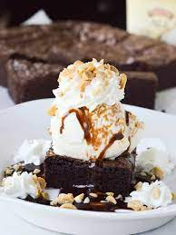
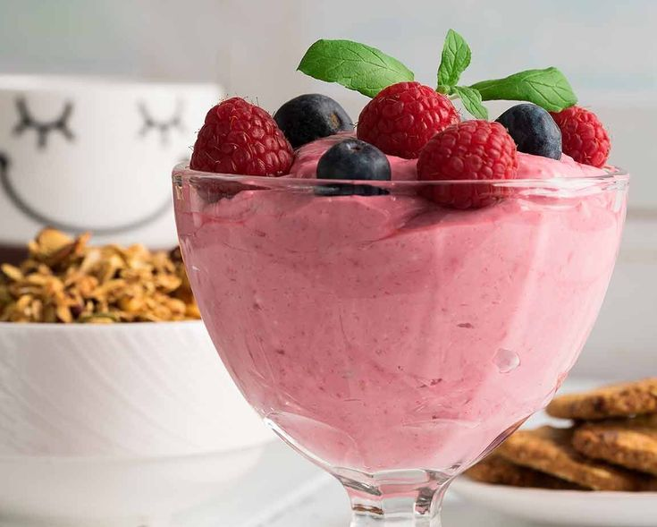
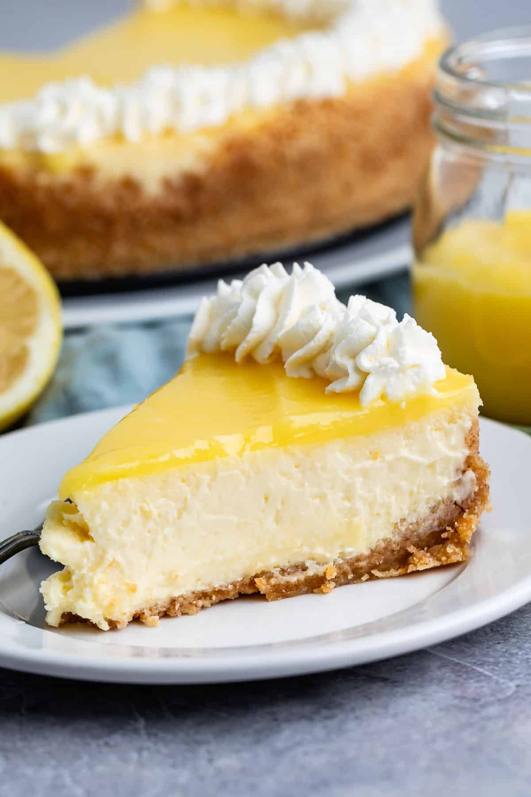

Brownie con Helado
Suave bizcocho de chocolate con trozos de nuez, acompañado de una bola de helado de vainilla.
Ingredientes y Como preparla
Pastel Tres Leches
Esponjoso bizcocho bañado en una mezcla de leche evaporada, condensada y crema de leche, cubierto con un toque de merengue ligero y canela espolvoreada.
Ingredientes y Como preparla

Mousse de Frutos Rojos
Delicado postre frío elaborado con fresas, frambuesas y arándanos, con una textura cremosa y un sabor ligeramente ácido que equilibra el dulzor.
Ingredientes y Como preparla

Cheesecake de Limón
Base crujiente de galletas con una suave crema de queso y limón, coronada con ralladura fresca que resalta su sabor cítrico y refrescante.
Ingredientes y Como preparla